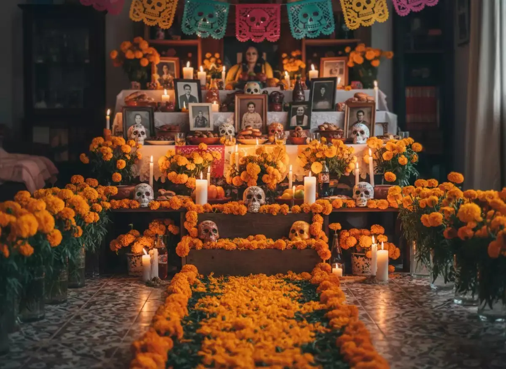
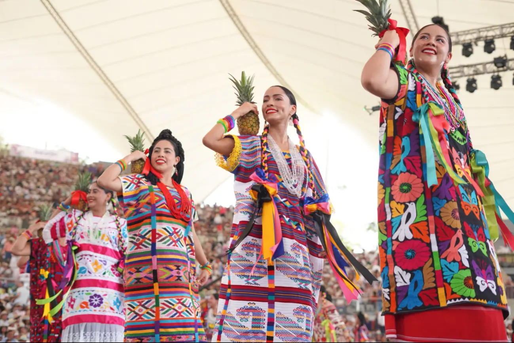
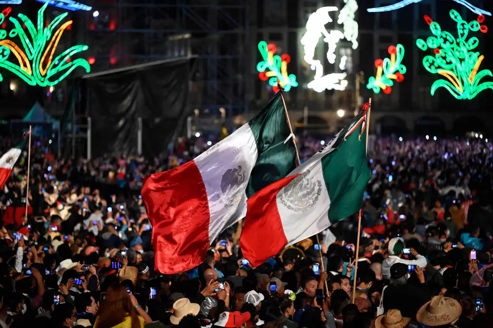
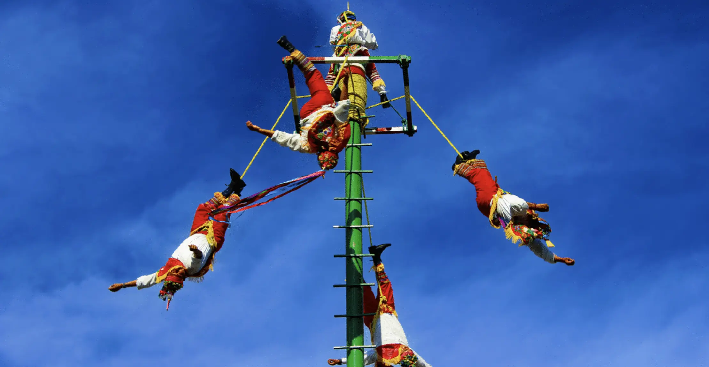
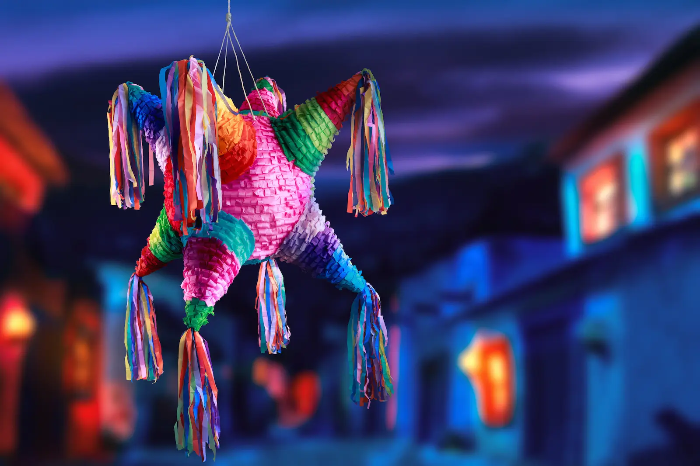
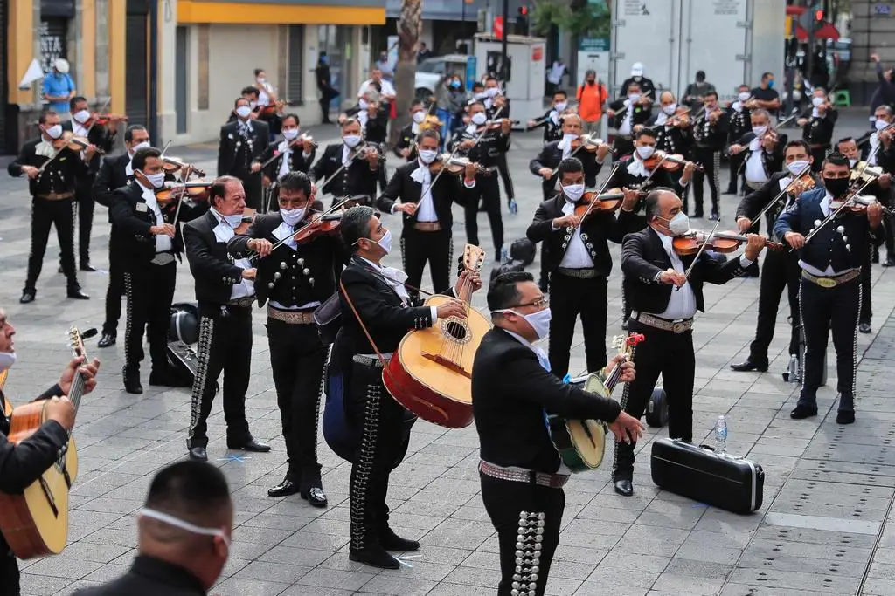

Día de Muertos
Celebración del 1 y 2 de noviembre que honra a los ancestros con ofrendas, flores de cempasúchil y papel picado.

Guelaguetza
Festividad máxima de Oaxaca donde las 8 regiones del estado comparten sus danzas, música y tradiciones.

Día de la Independencia
Se celebra la noche del 15 de septiembre con el tradicional "Grito" para conmemorar el inicio de la lucha en 1810.

Voladores de Papantla
Ritual prehispánico de fertilidad donde cuatro danzantes descienden girando atados de cuerdas desde un poste.

Posadas
Fiestas previas a la Navidad del 16 al 24 de diciembre, caracterizadas por el ponche, los cantos y las piñatas.

Mariachi
Expresión musical tradicional con cuerdas y trompetas, reconocida como Patrimonio Cultural de la Humanidad.